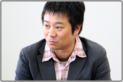
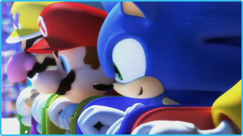
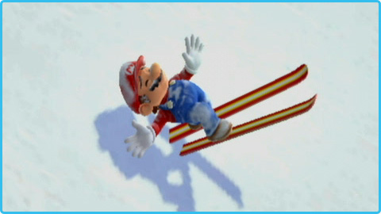

――
どういった経緯で、マリオとソニックがオリンピックに参加するという組み合わせが実現したんでしょうか？

大橋：
以前から任天堂さんに、「マリオとソニックで何かやりたい」という打診をしておりました。ただ、マリオとソニックの世界観はまったく違いますので、考えてみると共存させるのは難しい。どちらの世界観にも合うオリジナルな場所を作るとなると何年がかりになってしまうかわからない。そうした流れの中で、ちょうどセガがオリンピックのライセンスを取りまして、これでどうでしょうとご提案をさせていただいたのが、前回の『マリオ＆ソニック AT 北京オリンピック』でした。実際にスタジアムなどを作ってその中で動かしてみると、思っていた以上に違和感もなく、これはイケてるんじゃないかというところからスタートしました。
佐藤浩：
マリオとソニックが一緒にいておかしくない場所なんて、新たに考えてもなかなかないんですよ。しかし、オリンピックというのは無茶苦茶なパワーを持ってまして。最初に２人がオリンピックの会場を走り回っているムービーを見たら、みんな何か許せたんですね。うまくいったというか、他の方法が思い付かないくらいピッタリはまりました。

――
『マリオ＆ソニック AT バンクーバーオリンピック』は前回の頃から制作することは決まっていたんでしょうか？
大橋：
あらためてご提案をさせていただいた形です。ただ、バンクーバーオリンピックのライセンス取得は北京オリンピックの発売前から準備をしていました。『マリオ＆ソニック AT 北京オリンピック』の販売も非常に好調で、一度やったことなので作りやすいということもありますし、またゲーム内容も夏から冬にという変化もつけられますので、任天堂さんにもご了解いただきやすかったのではないかと思います。
――
まったく違う世界のキャラクターが一緒に登場すると、デザインや動きなどで調整が必要な部分も非常に多いと思いますが。
福井：
これまでの任天堂さんのマリオシリーズの動きと比べると、ちょっとリアルな方向です。デフォルメされたマリオっぽさやソニックらしさは損なうことなく、その中でできるだけリアルな動きをというところで勝負しています。キャラクター的な動きという意味では、お互い結構似ているなと感じています。
野中：
任天堂にはマリオなどのキャラクターを監修するチームがありまして、ゲームコンセプトや仕様を踏まえた上で、キャラクターの特徴に基づいて、動き方やモデルなどのすり合わせを最初にするんですね。そのチームからの話では、セガさんはモーションにしろモデルにしろ非常に質が高いし、少ないやりとりで完成も早いと。今回はキャラクターの数が多いのでお互い大変だったと思うのですが……そこはさすがセガさんだなと（一同・笑）。
佐藤浩：
先ほど似ているとおっしゃっていましたが、その辺にも秘密があったんじゃないんですか？
福井：
実は……私自身はソニックも作ったことがなかったので、北京の時はダブルで大変だったんです。今回は新たにドンキーコングとクッパJr.が加わっていますが、すでに前回である程度飲み込んでいたので、比較的早く対応できたかなと。
渡辺：
新しいキャラクターも、監修チームも感心するくらいキャラクターの個性が引き出されいて、またセガさんらしいスパイスも感じられる動きにしていただけました。
星野：
お互いに違った企業風土を持った会社ですし、異文化交流みたいな感じもありましたね。任天堂さんがマリオというキャラクターのどの部分を守っていて、どの部分は変えても良いと考えていらっしゃるのか、そのラインを探るところからですので。例えば、任天堂さんとコンセンサスをとる前に、セガ内で話をしている時のことですが、冬季オリンピックなので、マリオがスキーで転んだ時に雪だるまみたいに雪まみれにしたら面白いんじゃないかというアイデアが出ます。しかし、任天堂さんのスターキャラクターを雪で汚すってどうなんだろう？ となるわけです。格闘技じゃないですけど、その間合いを計って、あとはできるだけ踏み込んで良い試合をしたいなと。

野中：
いろいろ気を使わせてすみません。そういう駆け引きは確かに感じましたね（笑）。われわれはあくまでも遊びを重視しますので、遊びが面白いものになるのでしたら、マリオが泥まみれだろうが、雪まみれになろうが問題ありません。まぁそれはやりとりの中でわかっていただきましたね。
中村：
キャラクターの持つスペシャルアクションなんかも同じで、セガのキャラクターであればこちらで勝手にイメージして新しく作っても良いのですが、任天堂さんのキャラクターの場合はこんな感じじゃないかなと想像するところからはじめまして…これで大丈夫というものもあれば、何か違うというものもあるので、そこを詰めていくという流れでしたね。
佐藤祐：
コスチュームに関しても、ピーチとデイジーは冬用のデザインを新しく作っています。
星野：
せっかく新作ですし、競技にフィギュアスケートなどもありますので、女の子たちの新しいコスチュームは任天堂さんに作っていただきました。私たちの普段のデザインのテイストとの方向性の違いなんかも、そのあたりに感じていただけるんじゃないかなと思います。
野中：
そういえば、北京の時は水着を着せてはどうかみたいなこともありましたね。結局はいつもの格好のままになりましたが（笑）。
中村：
われわれとしては事務所NGということで（一同・笑）。ソニックは水が苦手なものですから、代わりにライフジャケットを着せました。